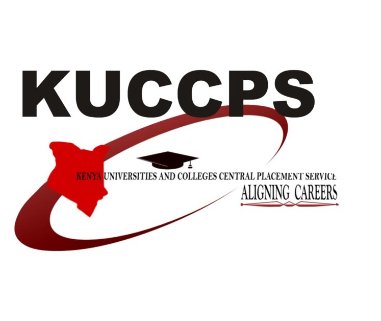
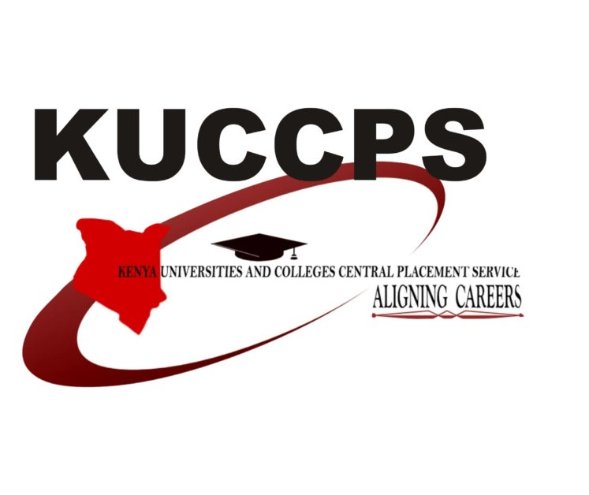

Do you always forget the main Website that you as a students should always keep in mind in your journey of higher education?
Do you get frustrated when you forget the important website for you as a studnet?
Well worry no more, This website is designed to keep all your best and important website links and updates in one place making it easy for you.
We have heard your cries and we are here to help you so as to focus on that which is important to you and the updates from the sites.
Here is a list:
- KUCCPS Website:- Kuccps.net
- HELB Website:- Helb.com
- KRA Website:- Kra.go.ke

 Jobs 2022.jpg) 
